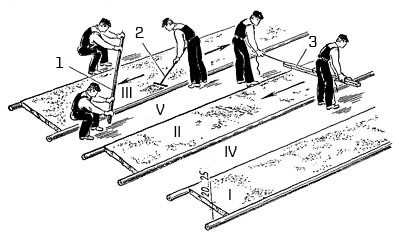

-

8(0152)31-25-61
-

kst@ggkst.by
-

http://ggkst.by
8(0152)31-25-61
kst@ggkst.by
http://ggkst.by
Карта 3: Устройство выравнивающей стяжки под плиточные полы
Состав технологических операций. Установка и выверка маячных реек; увлажнение основания; укладка и разравнивание растворной смеси;
уплотнение и заглаживание поверхности стяжки; снятие маячных реек и заделка борозд.
Механизмы, инструменты, приспособления, инвентарь. Машина СО-126 для приготовления и подачи растворов, виброрейка;
шлифовальная машина для затирки цементных стяжек. Строительный уровень; рулетка или складной метр; деревянный угольник с удлиненной линейкой;
разметочный шнур в корпусе; эталонный конус; стальные штыри; строительный молоток массой 600 г; маячные рейки деревянные или металлические длиной 3…6 м;
лопатки для плиточных работ и растворная; окованное одностороннее правило; скребок, стальная гладилка; царапка; двухметровая контрольная рейка;
деревянные рейки с отфугованной верхней кромкой; тележка на пневмоколесном ходу.
Материалы. Цементно-песчаный раствор. Расход раствора, м3 на 1 м2 стяжки, зависит от толщины стяжки:
| Толщина стяжки, мм | 25 | 30 | 35 | 40 | 45 | 50 |
| Расход раствора, м3 | 0,028 | 0,033 | 0,039 | 0,044 | 0,050 | 0,55 |
Схема организации рабочего места. В помещении, где нужно уложить выравнивающую стяжку, заранее раскладывают маячные рейки и заготавливают необходимое
количество раствора для их закрепления.
Последовательность выполнения технологических операций. К устройству выравнивающей стяжки приступают после очистки основания от мусора, заделки дефектных мест,
срубания выступов, насечки бетонных оснований, удаления загрязненных участков и вынесения на стены отметки верхнего покрытия пола.
Работу начинают со стороны, противоположной входу в помещение.
Установка и выверка маячных реек. Расстояние (шаг) укладываемых реек 2...2,5 м. Маячные рейки устанавливают по уровню так, чтобы их верх соответствовал толщине стяжки.
Их положение в плане и по высоте закрепляют крепежными марками из раствора (рис. 1, а). При необходимости установленные маячные рейки втапливают в растворную марку или,
наоборот, приподнимают, добавляя раствор, контролируя их положение уровнем (рис. 1, б).
Рис. 1. Устройство выравнивающей стяжки: а - раскладка маячных реек, б - контроль маячных реек по уровню, в - увлажнение основания
Рис. 2. Укладка, разравнивание и уплотнение раствора: 1 - правило, 2 - грабли, 3 - виброрейка; I-V - последовательность заполнения растворной смесью полос-захваток
Увлажнение основания. Основание поливают водой из шланга с распыляющей насадкой или обычной лейкой (рис. 1, в), не допуская пропусков и луж.
Укладка и разравнивание смеси. Цементно-песчаный раствор начинают укладывать от стен, противоположных входу в помещение.
Раствор разгружают в полосу-захватку, ограниченную маячными рейками, и разравнивают вдоль полосы гребком или граблями 2 (рис. 2) на толщину маячных реек.
После этого выравнивают раствор правилом 1, которое опирают на маячные рейки. В больших помещениях стяжку укладывают последовательно (I - V) полосами через одну,
в небольших помещениях - сразу по всей площади.
Уплотнение и заглаживание поверхности стяжки. Стяжку из пластичных и литых цементно-песчаных смесей с осадкой конуса до 13 см заглаживают металлической гладилкой.
Стяжку из жесткого раствора с осадкой конуса менее 13 см уплотняют виброрейкой 3 до появления цементного молока.
Свежеуложенные и уплотненные участки накрывают рогожей или мешковиной и поддерживают 7...10 сут. во влажном режиме.
Незатвердевшие поверхности стяжки обрабатывают царапкой или электрощеткой.
Снятие маячных реек и заделка борозд. Удаляют рейки после схватывания раствора, нанося легкие удары молотком по длине рейки и приподнимая ее за один конец.
Кромки уложенных полос промывают водой и грунтуют цементным молоком. После этого укладывают раствор в борозды, оставшиеся от реек,
а уложенные участки стяжки используют как маяки.
При укладке стяжки в небольшом помещении (без полос-захваток) установленные маяки вырубают. Борозды в местах вырубленных маяков заделывают тем же раствором.
Контроль качества. Уложенная стяжка должна иметь проектную толщину. Горизонтальность уложенной стяжки контролируют двухметровой рейкой,
передвигаемой в разных направлениях, и уровнем. Просветы между стяжкой и рейкой не должны превышать 10 мм. Отклонение от горизонтальной плоскости и
заданного уклона (по длине или ширине помещения) допускается до 0,2 %, но не более 50 мм.
Трудовые затраты. Нормы времени на устройство 1 м2 стяжки из цементно-песчаного раствора при механизированном нанесении раствора - 0,096,
при укладке раствора вручную - 0,23 чел-ч.
Нормы выработки на 1 чел-дн при механизированном нанесении раствора - 83,3, при укладке раствора вручную - 34,8 м 2.
Техника безопасности. Выравнивающую стяжку укладывают, применяя исправные инструменты, приспособления и инвентарь.
Механизированную укладку раствора в полосы-захватки выполняют в резиновых сапогах и перчатках, в защитных очках, при этом используют гаситель струи
раствора на выходе из растворопровода.
Контрольные вопросы. Когда приступают к укладке выравнивающих стяжек под плиточные полы? В какой последовательности заполняют раствором полосы-захватки в помещениях большой площади? Как обрабатывают поверхность цементно-песчаной стяжки, уложенной под полы из керамической плитки? Как устанавливают и закрепляют маячные рейки при устройстве выравнивающих стяжек? Как обрабатывают кромки полос затвердевшей растворной стяжки при укладке растворной смеси? Перечислите инструменты, необходимые для контроля поверхности уложенной растворной стяжки? Какие правила техники безопасности нужно выполнять при устройстве выравнивающей стяжки?
Карта 4 — Разбивка покрытия пола